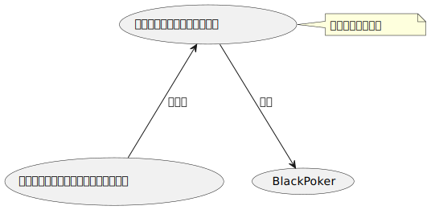
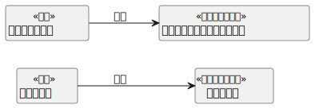
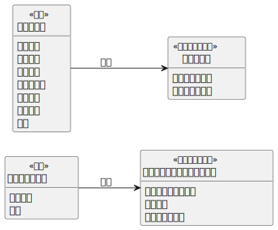
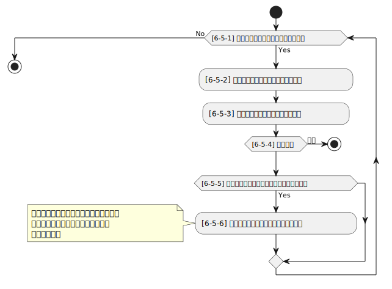

6. コアルール¶
トランプのみでトレーディングカードゲームのように遊ぶためには、 一般的なトレーディングカードゲームを抽象化し、トランプのみで遊べるように再構築しました。
コアルールは、割込みが可能なターン制ゲームの開始から勝敗が決まるまでを定義します。(Fig. 6.1)
BlackPokerはコアルールを実装しているため、ルールを変更する場合は、コアルールに従う必要があります。
このルールは、割込みが可能なターン制ゲームの標準化したモデルとして構築されており、他のゲームへの応用も可能です。

Fig. 6.1 コアルールのイメージ¶
6.1. 基礎概念¶
割込み可能なターン制ゲームでは、現実のゲーム盤面に影響を与える前に、 どの行動を先に行うかを決める仮想的な場所があります。
割込み可能なターン制ゲームは、見方を変えると“許可制のゲーム”とも表現できます。
つまり、プレイヤーは相手に許可を得て、自分の行動を実行できるかどうか確認しながら進める形式のゲームです。
いくつかの基礎概念を紹介します。 その後、それらを組み合わせたイメージを説明します。
6.1.1. ターン¶
このルールでは、プレイヤーはターンを“持つ”ことができます。 ターンを持っているプレイヤーは先に行動できます。 ターンを持っているプレイヤーをターンプレイヤーといいます。
6.1.2. アクション¶
アクションとは、プレイヤーの行動を示す定義です。 ターン制のゲームでは、プレイヤーは様々な行動を行います。 チェスであればコマを進めたり、ババ抜きであれば隣の人からカードを引くなどがあります。 それらをアクションと定義します。
6.1.3. チャンス¶
アクションを起こすことができる機会をチャンスといいます。 チャンスを持っている間は何度でもアクションを起こすことができます。 正式名称はアクションチャンスです。
6.1.4. ステージ¶
アクションの解決順を整理するために使う領域です。 後入れ先出し方式で、最後に積まれたアクションから順に解決されます。 正確には、ステージにはアクションではなく、後述するリクエストが蓄積されます。
6.1.5. リクエスト¶
アクションを実行すると、ゲームシステム（コアフロー）に対して どのようなアクションを実行するかを要求します。 この要求をリクエストと呼びます。正式名称はアクションリクエストです。
リクエストの種類によっては、ステージに蓄積されず、すぐに実行(解決)されるものもあります。
6.1.6. コンポーネント¶
コンポーネントとは、ゲーム盤面に配置されるモンスターや駒の定義を指します。 例えば、将棋の「歩」は駒としては複数存在しますが、「歩」の定義は1つです。 この定義をコンポーネントといいます。
6.1.7. コンポーネントインスタンス¶
コンポーネントの定義からインスタンス化されたものをコンポーネントインスタンスといいます。 例えば、将棋の「歩」はコンポーネントとして定義されていますが、 実際の盤面に配置される「歩」は、コンポーネント定義という設計図から作られたコンポーネントインスタンスとなります。
6.1.8. コアフロー(ルールシステム)¶
リクエストはコアフロー(ルールシステム)によって整理され、処理されます。 リクエストを即時解決するものと、ステージに蓄積されるものに分類され、順番に処理されます。
ゲームによって具体的に行う内容は異なりますが、処理する順番の制御順はコアフローが担います。
コアフローはゲームの開始から勝敗が決まるまで動作し続けます。
6.2. 詳細¶
基礎概念を図で表すと次のようになります。(Fig. 6.2)
Fig. 6.2 割込み可能なターン制ゲーム¶
仮想的な場所でリクエストを整理し、現実のゲーム盤面に承認された順で変更を反映します。
リクエストを整理することで割込みを実現しています。どのようにリクエストを処理するかは、コアフローに従います。
さらに、アクションとリクエスト、コンポーネントとコンポーネントインスタンスの関係は次のようになります。(Fig. 6.3)

Fig. 6.3 リクエストとコンポーネントインスタンスの関係¶
ゲーム盤面には複数のコンポーネントインスタンスが生成されます。
リクエストが解決されるたびに、コンポーネントインスタンスが生成されたり、既存のコンポーネントインスタンスの状態が変化したりします。
ここからは、アクションとコンポーネントの各項目について説明します。
6.2.1. アクションの定義項目¶
アクションを定義する際には、次の項目を設定する必要があります。 その他の項目は、具体的なアクションに応じて追加してください。
オーナー
トリガー
スピード
タイミング
起動条件
誘発条件
効果
6.2.1.1. オーナー¶
アクションの所有者。 アクションの定義はプレイヤー事に保持するため、同じ内容のアクションでもオーナーが異なります。
6.2.1.2. トリガー¶
アクションが要求される方法は、大きく分けて次の2種類に分類されます。
- 直接
プレイヤーがコストを支払うなどの手続きを経て実行するアクション。
- 誘発
条件が満たされた場合、自動で発動するアクション。
トリガー項目には「直接」または「誘発」のいずれかが設定されます。
6.2.1.3. スピード¶
リクエストが処理される速度は次の2種類に分類されます。
- 即時
リクエストはステージを用いず解決されます。
- 通常
リクエストはステージを経由して解決されます。
スポード項目には「即時」または「通常」のいずれかが設定されます。
6.2.1.4. タイミング¶
タイミングとは、アクションを実行できるタイミングを示します。 タイミングには次の2種類があります。
- メイン
ターンプレイヤーかつステージが空のときに起こせるアクション。 実行条件： - チャンスを持っている - 自分のターンである - ステージが空である
- クイック
いつでも起こすことができ、アクションをステージに積み重ねることが可能。 実行条件： - チャンスを持っている
注釈
エンドアクションの定義
最低1つはターンを別のプレイヤーに渡すアクションを定義してください。 これがないと、ターンが進行せずゲームが停止する可能性があります。
注釈
アクションのコントローラー
アクションを実行したプレイヤーを アクションのコントローラー と呼びます。 効果の解釈は、このコントローラーの視点で行われます。
6.2.1.5. 起動条件¶
アクションを起こすための条件を示します。
トリガーが「直接」の場合、起動条件が定義されます。 コストの支払いや対象の指定など、様々な条件がアクションごとに設定されます。
BlackPokerでは、コストの支払いや対象の指定の記述が冗長にならないよう、省略されることが多いです。
6.2.1.6. 誘発条件¶
アクションが誘発される条件を示します。 条件が満たされると、アクションからリクエストが生成され、コアフローに渡されます。
トリガーが「誘発」の場合、この項目が定義されます。
例： - ダメージを受けたとき - カードが墓地に移動したとき
これらの状況で誘発するアクションが設定されることがあります。
6.2.1.7. 効果¶
効果とは、アクションが解決された際に実行される処理を指します。
6.2.2. リクエストの定義項目¶
- アクション定義
リクエストが解決された際に実行されるアクションの内容。
- スピード
アクション定義のスピードとなります。
- タイミング
アクション定義のタイミングとなります。
- コントローラー
アクションを実行したプレイヤーがリクエストのコントローラーとなります。
6.2.3. コンポーネントの定義項目¶
コンポーネントには、次の項目が定義されます。 必要に応じて、ゲームに合わせた追加設定をしてください。
- オーナー
コンポーネンの所有者。 コンポーネントの定義はプレイヤー事に保持するため、同じ内容のコンポーネントでもオーナーが異なります。
- 能力
能力の詳細については、後述のセクションを参照してください。(6.3 能力)
6.2.4. コンポーネントインスタンスの定義項目¶
コンポーネントインスタンスには、次の項目が設定されます。 必要に応じて、ゲームに合わせた追加設定をしてください。
- コンポーネント定義
どのコンポーネント定義から生成されたのかを保持します。
- オーナー
コンポーネントインスタンスの所有者。 一般的なトランプゲームでは無視されることが多いですが、TCGのようにデッキを個人所有するゲームでは必要な情報です。
- コントローラー
現在、そのコンポーネントインスタンスを操作しているプレイヤー。 通常はオーナーとコントローラーは同じですが、コントロールを奪うアクションがある場合、異なることがあります。
注釈
コンポーネントインスタンスとリクエストのコントローラー
コントローラーは制御している人という意味になるため、コンポーネントインスタンスとリクエストのコントローラーは制御する対象が異なります。 コンポーネントインスタンスとリクエストの属性を次の図に示します。(Fig. 6.4)

Fig. 6.4 コントローラー属性¶
6.3. 能力¶
アクション、コンポーネントの定義項目を見てきました。 これらとは別の概念である 能力 について説明します。
能力とはアクションの効果とは異なる概念で、アクションを起こす際や効果を解釈する際に参照されます。
能力は解釈される際にコストは支払われず、ステージに置かれません。
能力を持つことができるのは、プレイヤーの他に駒やカードなどのゲームに登場するコンポーネントも含まれます。 (Fig. 6.5)
![@startuml
skinparam defaultTextAlignment center
!define ICONURL https://raw.githubusercontent.com/tupadr3/plantuml-icon-font-sprites/v2.2.0
!includeurl ICONURL/common.puml
!includeurl ICONURL/font-awesome-5/chess_pawn.puml
FA5_CHESS_PAWN(P1C,コンポーネント)
:プレイヤー1: as Player1
:プレイヤー2: as Player2
(あなたのすべての兵士を+1する) as Act1 <<能力>>
(あなたはダメージを受けなくなる) as Act2 <<能力>>
(速攻魔法を起こす際に\nコストを支払わなくてよい) as Act3 <<能力>>
Player1 ---> (Act1) : "能力"
Player1 ---> (Act2) : "能力"
P1C --> (Act3) : "能力"
Player2 ---> (Act1) : "能力"
Player1 ..> P1C : "所有"
@enduml](../_images/plantuml-5c3b9d2c43d8740600145b89955601a615170288.svg)
Fig. 6.5 能力のイメージ¶
注釈
7版までは、能力に誘発能力と常在型能力がありました。 8版からは、誘発型能力とアクションを起こせる能力をアクションの定義側に移動しました。 能力はそれ以外の常在型能力を示すものになりました。
6.4. コアフロー¶
今まで説明してきた概念を用いて コアフローの具体的な処理 を説明します。 この図は ゲームの開始から勝敗が決まるまでの流れ(コアフロー) を示しています。(Fig. 6.6)
BlackPokerはこのコアフローに則りリクエストが処理されます。
アナログゲーム用に作成したコアフローであるため、なるべく記憶する容量を減らすように設計しています。 デジタルゲームに応用する場合は、細部をゲームに合わせて変更してください。
![@startuml
start
:[1] ゲーム開始;
:[2] ターンプレイヤーにチャンスを移動;
repeat
if ([3] アクションを起こすか？) then (Yes)
:[4] パス記録のリセット;
:[5] アクションを起こす;
:[6] 誘発チェック;
if ([7] 即時か？) then (Yes)
:[8] リクエストの解決;
if ([9] 勝敗判定) then (決着)
stop
endif
else (No)
:[10] ステージに追加;
endif
:[6] 誘発チェック;
else (No)
:[11] パス記録に登録;
if ([12] 全員がパスしたか？) then (Yes)
if ([13] ステージにリクエストが存在するか？) then (Yes)
:[14] ステージから取出し;
:[8] リクエストの解決;
if ([9] 勝敗判定) then (決着)
stop
endif
:[6] 誘発チェック;
:[2] ターンプレイヤーにチャンスを移動;
else (No)
endif
else (No)
:[15] チャンス移動;
endif
endif
repeat while()
@enduml](../_images/plantuml-1140d0c1b634f56cca0aee50c4f78d0b3cd09b8b.svg)
Fig. 6.6 コアフロー¶
- [1] ゲーム開始
先攻を決め、ゲームを始める準備を行います。
- [2] ターンプレイヤーにチャンスを移動
ターンを持っているプレイヤーにチャンスを移動します。
- [3] アクションを起こすか？
チャンスを持っているプレイヤーはアクションを起こすかを判断します。
- [4] パス記録のリセット
パスしたプレイヤーの記録をリセットします。
- [5] アクションを起こす
アクションを起こしこれからプレイヤーが行うことを宣言します。 ゲームによってアクションの起こし方は異なります。BlackPokerではアクション名を言い、コストの支払や対象を指定しアクションを起こします。 一方ババ抜きでは、隣のプレイヤーからカードを引く際に宣言せず暗黙にアクションが起きている場合もあります。
- [6] 誘発チェック
ここに至るまでに誘発したアクションがないかチェックします。誘発した場合、効果を解決するかスタックに追加します。詳しいフローは 6.4.1 誘発チェック を参照してください。
- [7] 即時か？
リクエストのスピードが即時か判定します。
- [8] リクエストの解決
アクションの効果に定義されている内容を実行します。 その他にコンポーネントを捨て山に移動するなどゲームによって決まった処理があれば行います。 アクションの解決の中でも効果に定義されている内容を実行することのみを指す場合「効果を発揮する」と言います。
- [9] 勝敗判定
ゲームの勝敗を判定します。決着した場合ゲームが終了します。判定の方法はゲームにより異なります。
- [10] ステージに追加
リクエストをステージに追加します。
- [11] パス記録に登録
パスしたプレイヤーを記録します。パス記録がリセットされるため、同じプレイヤー名は2回登録されません。
- [12] 全員がパスしたか？
パス記録に全てのプレイヤー名が記録されているか判定します。
- [13] ステージにリクエストが存在するか？
ステージにリクエストが存在するか判定します。
- [14] ステージから取出し
最後にステージに追加されたリクエストをステージから取出します。
- [15] チャンス移動
チャンスを持っているプレイヤーからチャンスを持っていないプレイヤーにチャンスを移動します。 チャンスを移動するルールはゲームによって異なります。
6.4.1. 誘発チェック¶
アクションの中には誘発条件を持っているアクションがあります。 誘発条件に該当した場合、アクションからリクエストが誘発されます。
誘発チェックでは、誘発したリクエストを解決またはステージに追加します。 誘発したリクエストのコントローラーは起因となったアクションのオーナーがコントローラーとなります。 誘発チェックは次の図のように行います。(Fig. 6.7)
注釈
バッファ
誘発したリクエストを一時的に溜めておくバッファという領域があります。正式名称はアクションバッファです。
![@startuml
'==============================
'【Main method】（アクション分類・プレイヤー毎処理）
'==============================
|Main method|
start
:[6-1] 誘発したアクションを分類しバッファに追加;
note right
「即時/通常 × メイン/クイック」で分類
end note
note right
誘発したアクションのコントローラーは
起因となったアクションのオーナー
になります。
end note
while ([6-2] バッファは空か？) is (No)
' 外部ループ：バッファに何らかのアクションが残っている限り処理する
'-------------------------------------------
'【即時：プレイヤー毎に処理】
'-------------------------------------------
while ([6-3] バッファに即時はあるか？) is (Yes)
group 即時: プレイヤー毎に処理
note
順番はターンプレイヤーから
ターンが回る順に行う
end note
while ([6-4] 該当プレイヤーに即時があるか？) is (Yes)
:[6-5] タイミング=メインの即時アクションを処理;
note right
別フロー呼び出し
end note
:[6-6] タイミング=クイックの即時アクションを処理;
note right
別フロー呼び出し
end note
:[6-7] 次のプレイヤーへ;
endwhile (No)
end group
endwhile (No)
'-------------------------------------------
'【通常：プレイヤー毎に処理】
'-------------------------------------------
while ([6-8] バッファに通常はあるか？) is (Yes)
group 通常: プレイヤー毎に処理
note
順番はターンプレイヤーから
ターンが回る順に行う
end note
while ([6-9] 該当プレイヤーに通常があるか？) is (Yes)
:[6-10] タイミング=メインの通常アクションを処理;
note right
別フロー呼び出し
end note
:[6-11] タイミング=クイックの通常アクションを処理;
note right
別フロー呼び出し
end note
:[6-12] 次のプレイヤーへ;
endwhile (No)
end group
endwhile (Yes)
endwhile (Yes)
stop
@enduml](../_images/plantuml-6f625fd3091913318d2a09c4f5dda21eb1e08d44.svg)
Fig. 6.7 誘発チェック¶
- [6-1] 誘発したリクエストを分類しバッファに追加
各プレイヤーが誘発させたリクエストを、スピードおよび タイミングに基づいて分類し、一旦バッファに追加します。
- [6-2] バッファは空か？
バッファが空であるかどうかを判定します。 未処理のリクエストが残っている場合は、以降の処理ループを継続します。
- [6-3] バッファに即時はあるか？
バッファ内にスピードが即時のリクエストが存在するかを判定します。 存在する場合、 ターンプレイヤーから順に即時の処理グループへ進みます。
- [6-4] 該当プレイヤーに即時があるか？
現在処理対象となっているプレイヤーがコントローラーとなっているリクエストがバッファにあるかを確認します。 スピードが即時のリクエストが存在するかを判定し、 存在しない場合は、そのプレイヤーでの処理を終了し、次のプレイヤーへ移行します。
- [6-5] タイミング=メインの即時アクションを処理
該当プレイヤーについて、タイミングが「メイン」、スピードが「即時」のアクションを実行します。 詳細は 6.4.1.1 誘発即時解決 をタイミング=メインとして参照してください。
- [6-6] タイミング=クイックの即時アクションを処理
同じプレイヤーについて、タイミングが「クイック」、スピードが「即時」のアクションを実行します。 詳細は 6.4.1.1 誘発即時解決 をタイミング=クイックとして参照してください。
- [6-7] 次のプレイヤーへ
現在のプレイヤーでの処理が完了した後、 ターン順に次のプレイヤーへ処理を移行します。
- [6-8] バッファに通常はあるか？
バッファ内にスピードが通常のリクエストが存在するかを判定します。 存在する場合、 ターンプレイヤーから順に即時の処理グループへ進みます。
- [6-9] 該当プレイヤーに通常があるか？
現在処理対象となっているプレイヤーがコントローラーとなっているリクエストがバッファにあるかを確認します。 スピードが即時のリクエストが存在するかを判定し、 存在しない場合は、そのプレイヤーでの処理を終了し、次のプレイヤーへ移行します。
- [6-10] タイミング=メインの通常アクションを処理
該当プレイヤーについて、タイミングが「メイン」、スピードが「通常」のアクションを実行します。 詳細は 6.4.1.2 通常：アクション毎に処理 をタイミング=メインとして参照してください。
- [6-11] タイミング=クイックの通常アクションを処理
同じプレイヤーについて、タイミングが「クイック」、スピードが「通常」のアクションを実行します。 詳細は 6.4.1.2 通常：アクション毎に処理 をタイミング=クイックとして参照してください。
- [6-12] 次のプレイヤーへ
現在のプレイヤーでの処理が完了した後、 ターン順に次のプレイヤーへ処理を移行します。
注釈
各処理グループ内では、必ずターンプレイヤーから始まり、 ターンが回る順に全プレイヤーに対して確認およびアクションの処理を実施します。 また、ループはバッファに未処理のアクションが存在する限り繰り返されます。
6.4.1.1. 誘発即時解決¶
誘発チェックで誘発したスピードが即時のリクエストを処理します。 呼び出し元で指定されたプレイヤーおよびタイミングに基づいて処理します。 誘発チェックは次の図のように行います。(Fig. 6.8)

Fig. 6.8 誘発チェック-即時処理¶
- [6-5-1] バッファから該当の即時はあるか？
バッファから対象プレイヤーかつ、該当するタイミングかつ、スピードが即時のリクエストが存在するかを判定します。 存在する場合、以降の処理へ進み、存在しなくなるまでこのループを継続します。
- [6-5-2] バッファからリクエストを取り出す
条件を満たしたリクエストを、バッファから1つ取り出します。 どのリクエストを取り出すかは対象プレイヤーが決定します。 取り出されたリクエストは、解決処理の対象となります。
- [6-5-3] 取り出したリクエストを解決する
取り出されたリクエストの効果を実行し、解決します。 詳しくは [8] リクエストの解決 参照してください。
- [6-5-4] 勝敗判定
勝敗を判定します。 詳しくは [9] 勝敗判定 参照。
- [6-5-5] リクエストが新たな誘発を発生させたか？
効果の解決後、それが起因となり新たな誘発を発生させたかどうかを確認します。 発生している場合は、その誘発アクションを再度バッファに追加する必要があります。
- [6-5-6] 誘発したリクエストをバッファに追加
新たに誘発されたリクエストが存在する場合、該当アクションをバッファに追加します。 これにより、再帰的なアクション処理が可能となり、次のループで該当するリクエストの取り出し処理が実行されます。
6.4.1.2. 通常：アクション毎に処理¶
誘発チェックで誘発したスピードが通常のリクエストを処理します。 呼び出し元で指定されたプレイヤーおよびタイミングに基づいて処理します。 誘発チェックは次の図のように行います。(Fig. 6.9)
![@startuml
'==============================
'【通常：アクション毎に処理】
'==============================
start
while ([6-10-1] バッファから該当の通常はあるか？) is (Yes)
:[6-10-2] バッファからリクエストを取り出す;
if ([6-10-3] 取り出したリクエストのタイミングがメインか判定) then (Yes)
if ([6-10-4] ステージが空か判定) then (Yes)
:[6-10-5] リクエストをステージに追加;
else (No)
:[6-10-6] リクエストを破棄;
endif
else (No)
:[6-10-7] リクエストをステージに追加;
endif
if ([6-10-8] リクエストが新たな誘発を発生させたか？) then (Yes)
:[6-10-9] 誘発したリクエストをバッファに追加;
note left
誘発したリクエストのコントローラーは
起因となったアクションのオーナー
になります。
end note
else (No)
endif
endwhile (No)
stop
@enduml](../_images/plantuml-5d2051ec7bb14a770950bcb23c25d203c53ec5f1.svg)
Fig. 6.9 誘発チェック-通常処理¶
- [6-10-1] バッファから該当の通常はあるか？
バッファから対象プレイヤーかつ、該当するタイミングかつ、スピードが通常のリクエストが存在するかを判定します。 存在する場合、以降の処理へ進み、存在しなくなるまでこのループを継続します。
- [6-10-2] バッファからリクエストを取り出す
条件を満たしたリクエストを、バッファから1つ取り出します。 どのリクエストを取り出すかは対象プレイヤーが決定します。 取り出されたリクエストは、解決処理の対象となります。
- [6-10-3] 取り出したリクエストのタイミングがメインか判定
取り出したリクエストのタイミングが「メイン」であるかどうかを判定します。 「Yes」と判定された場合は、ステージへの追加前に空き状況の確認へ進みます。 「No」の場合は、クイックタイミングとして処理を行います。
- [6-10-4] ステージが空か判定
タイミングがメインの場合、そのリクエストをステージに追加できるかどうか、 すなわちステージに空きがあるかを判定します。
- [6-10-5] リクエストをステージに追加
ステージが空いている場合、取り出したリクエストをステージに追加します。
- [6-10-6] リクエストを破棄
ステージが埋まっている場合、取り出したタイミングがメインのリクエストを破棄します。
- [6-10-7] リクエストをステージに追加
取り出したリクエストのタイミングが「クイック」である場合、 ステージの空き状況にかかわらず無条件でリクエストをステージに追加します。
- [6-10-8] リクエストが新たな誘発を発生させたか？
リクエストをステージに追加した後、それが起因となり新たな誘発を発生させたかどうかを確認します。 誘発が発生している場合は、後続の処理でアクションバッファへの追加が行われます。
- [6-10-9] 誘発したリクエストをバッファに追加
新たに誘発されたリクエストが存在する場合、該当アクションをバッファに追加します。 これにより、誘発処理の再実行が可能となります。
6.5. まとめ¶
コアルールについて説明しました。 すでにあるターン制のゲームからアクションを洗い出し、能力を整理することで割込処理を可能としゲームの新しい遊び方が見つけられます。 また、新しく作成するゲームに関してもコアルールを意識して作成することで、ルール追加がしやすいゲームが考えやすいと思います。